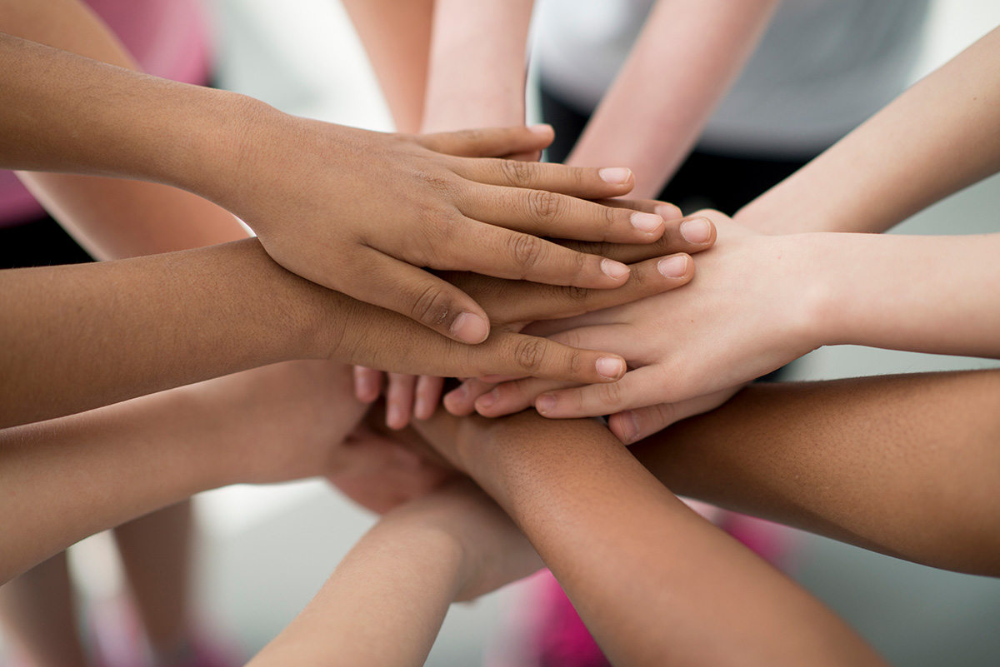

الألعاب، الألعاب المنظمة، والرياضات**
تمامًا كما تفعل معظم الحيوانات، نلعب نحن البشر أثناء نشأتنا، ومن خلال اللعب نُدرّب قدراتنا البدنية ومهاراتنا في التفاعل مع الآخرين. على مر الزمن، تطورت ألعاب مختلفة، ولاحقًا ألعاب منظمة، مما أدى إلى تنوع أكبر في ما نقوم بتدريبه. بعض الأمثلة على ما نقوم بتدريبه أثناء اللعب تشمل: التعاون، الرمي والقفز، المرونة، إدراكنا للمكان، بالإضافة إلى التوازن والتحكم في الجسم. وكلما طورنا هذه المهارات أكثر، أصبحنا أفضل في ربطها بحركات أكثر تعقيدًا. فعلى سبيل المثال، قد يصبح التعاون داخل فريق معقدًا للغاية، ويمكن أن يتطور القفز بالقدمين معًا إلى شقلبة مع دوران.
الرياضة غير الربحية في السويد هي الحركة التي تجمع أكبر عدد من الشباب تحت "سقف" واحد. تُعد الحركة الرياضية ذات أهمية كبيرة جدًا لكثير منا، لأنها تجمعنا وتطوّرنا كأفراد. إن تنوّع أنواع الرياضات المتاحة يكاد يكون غير محدود، ومعظم الأطفال والشباب يجدون خلال نشأتهم رياضة واحدة على الأقل لتجربتها. حوالي 90٪ من جميع السويديين كانوا يومًا ما أعضاءً في نادٍ رياضي.
يمكن أن تكون الرياضة غير منظمة أيضًا، مثل عندما تخرج أنت وأصدقاؤك للجري، أو تذهبون إلى صالة الألعاب الرياضية لممارسة تمارين القوة، أو تتجمعون في الساحة للعب كرة القدم بهدفين. وباختصار، يمكن القول إن الرياضة هي أي نشاط حركي يُمارَس بهدف الشعور بتحسن بدنيًا أو نفسيًا.